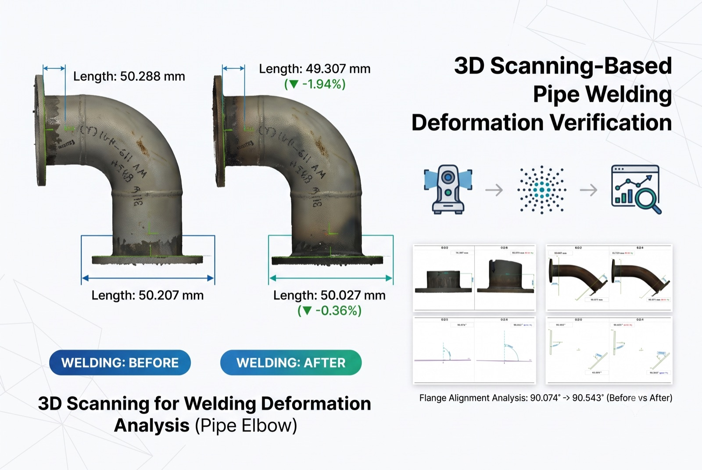
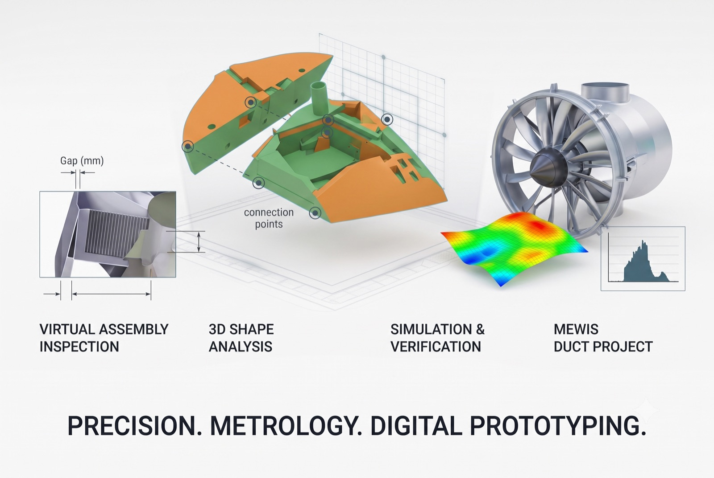
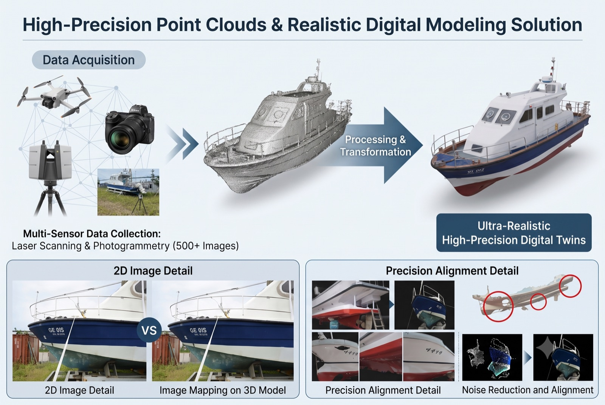

Capture
포인트클라우드, 사진, CAD 기준, 작업공간 제약을 한 프로젝트 데이터로 수집합니다.
Manufacturing Data Stack
조선·제조 공간을 3D 데이터로 만들고 AI 분석을 거쳐 검사, 역설계, 로봇 실행 데이터로 전환합니다.
포인트클라우드, 사진, CAD 기준, 작업공간 제약을 한 프로젝트 데이터로 수집합니다.
AI 객체인식, 공간추론, 편차분석으로 현장 판단에 필요한 의미를 추출합니다.
품질판정 결과를 CAD, 지그, 3D 프린팅 시험편, 로봇 실행 데이터로 연결합니다.
Data Transformation
현장 캡처, AI 분석, 품질검사, 역설계 결과를 탭으로 전환하며 볼 수 있습니다.

Capture
선박블록, 카고홀드, 몰드, 배관, 작업공간을 포인트클라우드와 사진, CAD 기준으로 묶습니다.

Analyze
구조물과 부품을 분할하고 객체 관계, 접근 가능성, 충돌 위험을 계산합니다.

Decide
CAD 대비 편차, 허용오차, 검사 우선순위, 합격/보류 근거를 리포트로 정리합니다.

Physical AI
작업공간 포인트클라우드, 객체 위치, 접근 가능성, 충돌 후보, 3D 비전 센서 조건을 로봇 경로와 용접·운반 검증 데이터로 정리합니다.
Applied Cases
선박·제조 현장의 스캔 데이터가 실제 검사, 인식, 자동화 데이터로 이어진 사례입니다.
HD현대삼호 컨테이너선 카고홀드 포인트클라우드에서 구조물과 작업공간을 인식하고, 객체 분할·공간 관계·검사 기준 데이터를 자동화 모듈로 정리합니다.
HD현대삼호 LNGC 화물창 편평도 계측 과정에서 스캐폴딩 시스템을 탐지·분할하기 위한 딥러닝 기반 포인트클라우드 처리와 후처리 연구를 수행했습니다.

소형선박과 양산몰드의 스캔 데이터를 기준 형상과 비교해 정도관리 및 공정개선 가능성을 검증했습니다.
선박블록 포인트클라우드 환경, 3D 비전 센서, 3D 프린팅 시험편을 연결해 로봇 경로·충돌·접근성·용접선 추출 가능성을 검토합니다.
Business Area
대형 상용 패키지 도입 전에 작은 범위의 파일럿으로 검사 가능성, 자동화 가능성, 제작 보조 효과를 검증합니다.
대상물 스캔, 정합, 기준 좌표 설정, CAD 대비 편차분석, 검사 항목 정의.
도면이 부족한 부품·몰드·구조물을 스캔 기반 CAD 재구성 데이터로 전환.
포인트클라우드 분할, 3차원 객체인식, 결함 후보 탐지, 공간 관계 추론 모델을 파일럿에 적용.
편차, GD&T, 용접 전후 변형량, 검사 판정 근거를 리포트와 의사결정 자료로 정리.
검사·조립·임시 고정에 필요한 3D 프린팅 지그, 픽스처, 시제품 적용 검토.
포인트클라우드 기반 작업공간을 로봇 경로, 충돌 검토, 비전 센서 조건, 현장 실행 데이터로 정리.
Spatial AI Engine
OPTLab의 LNGC 화물창 객체탐지, 조선소 3D 딥러닝 데이터셋, 선박 블록 지지대 설치 정확도 검사 연구를 기반으로 포인트클라우드 데이터를 의미 있는 현장 판단 데이터로 바꿉니다.
조선소 포인트클라우드에서 선박블록, 작업장, 랙, 서포트, 스캐폴드처럼 현장 객체군을 분리합니다.
LNGC 화물창 스캐폴딩, 블록 지지대, 작업공간 구조물을 탐지해 검사 대상과 제외 대상을 구분합니다.
FPFH, TDA, 밀도 분석 기반으로 대용량 포인트클라우드를 경량화하고 신뢰 가능한 특징을 강화합니다.
편차맵, 설치 정확도, 용접선 후보, 로봇 접근 가능성을 리포트와 피지컬AI 실행 데이터로 연결합니다.
Physical AI Execution
Optimize3D는 현장 공간을 단순히 3D로 보여주는 데서 끝내지 않고, 로봇과 3D 비전 센서가 판단할 수 있는 접근 가능성, 충돌 위험, 작업 자세, 용접선 후보 데이터로 변환합니다.
선박블록 내부처럼 복잡한 공간을 포인트클라우드 환경으로 구성하고 로봇 접근 제약을 정리합니다.
협동로봇 경로, 케이블 간섭, 작업자 접근, 충돌 후보를 시뮬레이션 데이터로 확인합니다.
RealSense 계열 3D 비전 센서, 조명, 거리 조건을 작업 대상과 함께 검토합니다.
용접선·표면 추출, 로봇 입력 좌표, 시험편, 검증 리포트를 현장 적용 자료로 묶습니다.
Operating Model
단순 3D 스캐닝 결과 확인에서 벗어나, 스캔 데이터를 인공지능으로 지능화해 검사·역설계·품질판정·피지컬AI 실행 데이터까지 확장할 수 있는 기반을 만듭니다.
포인트클라우드, CAD, 사진, 검사 기준, 현장 제약을 확인합니다.
좌표계, 기준 형상, 허용 오차, 판정 항목을 정합니다.
편차맵, 특징 추출, 객체 분할, 공간추론, 리포트 양식을 빠르게 검증합니다.
검사 리포트, CAD 재구성, 지그 설계, 피지컬AI 실행 데이터로 납품합니다.
Productized Pilot
Optimize3D는 장비 운용, 포인트클라우드 처리, 기준 정렬, 판정 로직, 리포트, 제작·로봇 입력 데이터까지 한 프로젝트 범위로 묶어 제공합니다.
Applications
스캔 대상, 장비, 정합 방식, 품질 기준을 현장 조건에 맞춰 최적화하여 스캐닝합니다.
포인트클라우드에서 구조물과 부품을 분할하고 결함 후보, 편차, 검사 우선순위를 정리합니다.
용접 전후 치수 변화, 플랜지 정렬, 각도·길이 편차를 스캔 데이터로 비교합니다.

스캔 기반 형상 분석과 CAD 재구성을 통해 조립부 간섭, 갭, 연결 기준을 검토합니다.

레이저 스캐닝, 사진측량, 이미지 매핑을 결합해 현실적인 3D 모델과 정합 데이터를 만듭니다.
포인트클라우드 기반 작업공간을 로봇 경로, 충돌 검토, 3D 비전 센서 조건, 현장 실행 데이터로 전환합니다.
Technical Backbone
국립목포해양대학교 최적선박생산기술연구실의 3D 스캐닝, 품질관리, 역설계, 기계학습, 적층가공, 협동로봇 실적을 Optimize3D의 기술 기반으로 사용합니다.
Contact
포인트클라우드, CAD, 사진, 검사 기준, 현장 문제 중 하나만 있어도 파일럿 범위를 잡을 수 있습니다.